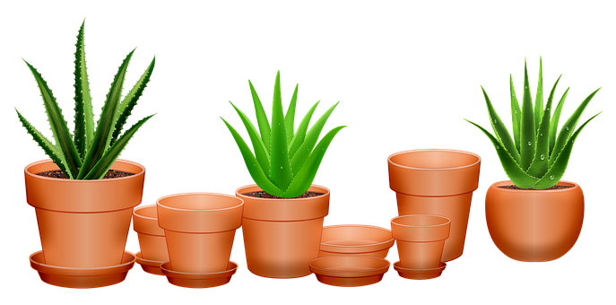

Lets take a brief walk through what type of plant variety you will find in my home garden
This plant thrives everywhere except in cold climates.The origins of the plant can be traced to China where the first ever use of bamboo in every day use was recorded. It's been proven that this plant is strong enough for construction too. Just be sure to treat the bamboo to ensure it lasts long
This evergreen perennial originates from the Arabian Peninsula. It thrives in tripical, semi-tropical and arid climates around the world. A vast majority of plants have medicinal properties and aloe is one of them. Find out more here
